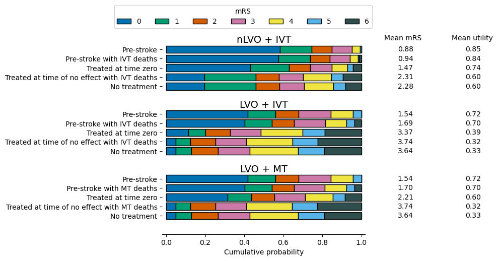
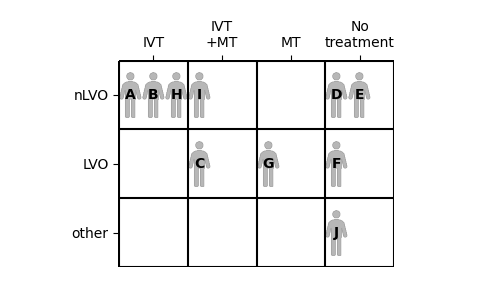
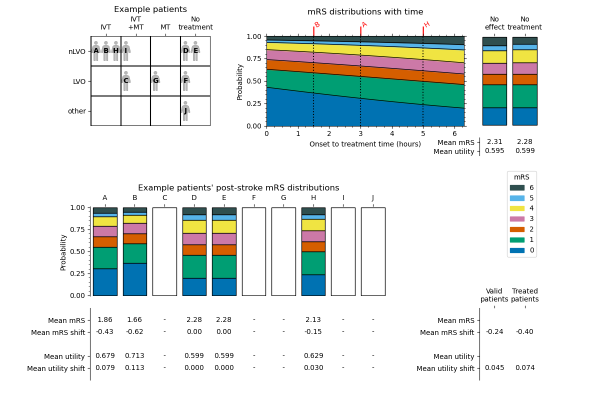
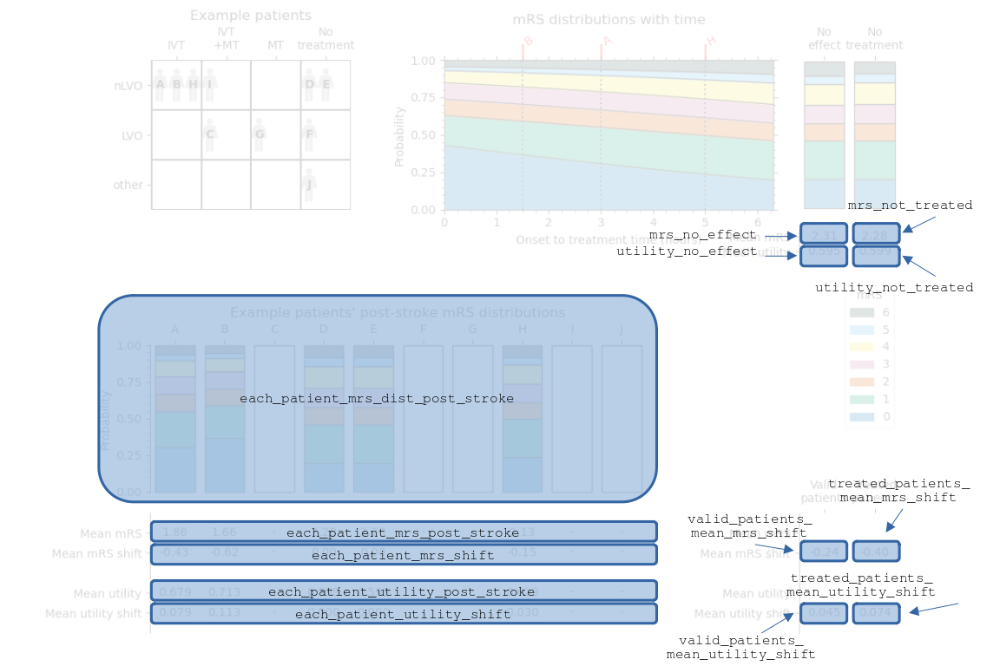
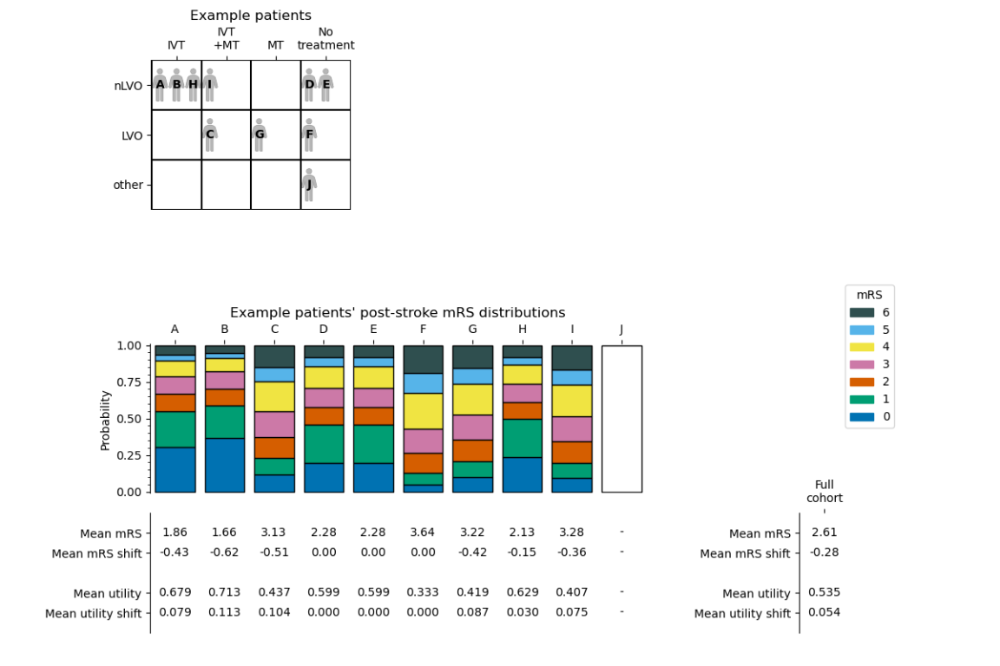
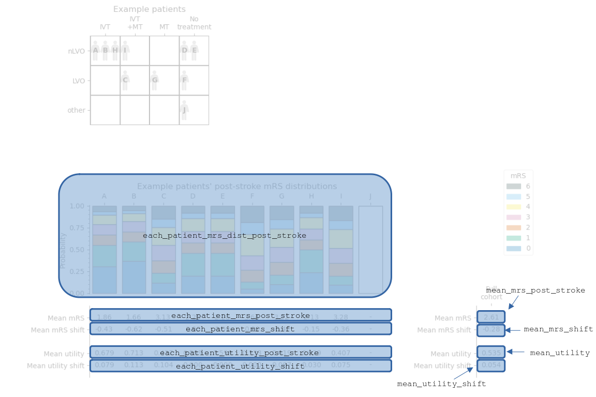

Documentation: Continuous outcome model#
This notebook describes how the continuous outcome model works.
If you’re looking for an example of the code to run the model, look at the demo notebook instead.
The continuous outcome model calculates modified Rankin Scale (mRS) distributions for ischaemic stroke patients. The outcomes depend on time to treatment with intravenous thrombolysis (IVT) or mechanical thrombectomy (MT). The results are broken down separately for large vessel occulusions (LVO) and non large vessel occlusions (nLVO).
This model is called “continuous” because it does not assign each patient a single mRS score from a small set of discrete values, but instead takes the mRS score from a continuous scale. For example, a patient could receive an mRS score of 2.33. In this continuous system, a patient’s mRS score is taken as the mean across a probability distribution of mRS scores. This emulates the expected mean mRS score across a whole population of patients who are identical except for their starting mRS score, and the distribution of those starting mRS scores matches the reference population data that is used by the outcome model.
The model also calculates utility-weighted mRS scores.
Summary of the method:#
These steps will be shown in more detail in the rest of this document.
Import the base mRS distributions and calculate their mean mRS and utilities
Take the patient data, which must include:
Stroke type
Whether treated with IVT, and if so the time from onset to IVT
Whether treated with MT, and if so the time from onset to MT
Group the patients by stroke type and treatment. The subgroups are:
nLVO and IVT
LVO and IVT
LVO and MT
Calculate the patient outcomes for each subgroup.
The outcomes vary with time. Patients who receive treatment have their post-stroke mRS distribution calculated for their individual treatment times.
Patients who receive treatment after the time of no effect use the mRS distribution at the time of no effect.
Patients who receive no treatment use the mRS distribution for no treatment.
Combine the subgroups to match the input patient data
Each patient in the input data is given only one set of post-stroke data even if they appear in multiple subgroups.
Limitations and notes:#
Randomness: There are no random elements. Running the code twice for the same input data will give identical results both times.
nLVO with MT: For MT, there are only mRS probability distributions for patients with LVOs. If a patient with an nLVO is treated with MT, the patient details are quietly updated to reassign them as LVO and so use the base LVO mRS distributions for pre-stroke, no-treatment, and no-effect.
Multiple treatments: Some patients receive both IVT and MT. Separate outcomes are calculated for each case and stored in the LVO+IVT and LVO+MT results dictionaries. However in the combined full cohort outcomes, only one of the sets of outcomes can be used. The chosen set is the one with the better improvement in outcomes. The separate LVO+IVT and LVO+MT results dictionaries are then not updated to remove the rejected set of outcomes, so any mean shifts in values across the LVO+IVT group (for example) could include data that was not actually used in the combined full cohort outcomes.
Stroke type codes: Internally, stroke types are referred to by a number rather than their full name. The codes are:
0 - “other” stroke type
1 - nLVO
2 - LVO
This is done to make all of the input data numeric and so easier to export.
“Other” stroke types: Currently “other” stroke types are not used in the calculations. This is due to the unavailability of mRS probability distributions for various “other” stroke types.
Notebook setup#
import numpy as np
import pandas as pd
Base outcomes and means#
The outcome model uses the following probability distributions of modified Rankin scale (mRS) by default:

The extra columns on the right-hand-side show the mean mRS and mean utility across each distribution. Those values are calculated following the method and example below.
Notes:
The pre-stroke and no-treatment distributions are identical for all LVO patients regardless of whether IVT and/or MT were considered.
The median (not mean!!) mRS is the value where cumulative probability is 0.5.
Calculating mean mRS and utility#
The mean mRS, \(\bar{x}\), of a probability distribution is found by multiplying each mRS value by the probability of that mRS value in the distribution, and then summing all of those values:
For mRS between 0 and 6 this is written in full as:
Mean utility \(\bar{u}\) is calculated in a similar way, except the probability of each mRS value \(x\) is multiplied by the weighted utility \(u\) of that mRS value:
For example, with the following conversion between mRS and utility:
mRS \(x\): |
0 |
1 |
2 |
3 |
4 |
5 |
6 |
|---|---|---|---|---|---|---|---|
Utility \(u(x)\): |
0.97 |
0.88 |
0.74 |
0.55 |
0.20 |
-0.19 |
0.00 |
Then the mean utility in full is:
The values in the mRS probability distribution sum to exactly one so there is no need to further divide these means by the size of the population.
Example: calculate mean mRS and utility#
For the nLVO pre-stroke mRS distribution, which is:
\(P\)(mRS<=0) |
\(P\)(mRS<=1) |
\(P\)(mRS<=2) |
\(P\)(mRS<=3) |
\(P\)(mRS<=4) |
\(P\)(mRS<=5) |
\(P\)(mRS<=6) |
|---|---|---|---|---|---|---|
0.582881 |
0.745419 |
0.848859 |
0.951082 |
0.993055 |
1.00 |
1.00 |
\(P\)(mRS=0) |
\(P\)(mRS=1) |
\(P\)(mRS=2) |
\(P\)(mRS=3) |
\(P\)(mRS=4) |
\(P\)(mRS=5) |
\(P\)(mRS=6) |
|---|---|---|---|---|---|---|
0.582881 |
0.162538 |
0.10344 |
0.102223 |
0.041973 |
0.006945 |
0.0000 |
We can calculate the mean mRS, \(\bar{x}\):
And the mean utility, \(\bar{u}\):
Code reference#
Given a cumulative mRS probability distribution and a set of utility weights, the mean mRS and utility are calculated by:
# mRS
# 7 values, one per mRS:
cumulative_mRS_dist = np.array([0.582881, 0.745419, 0.848859, 0.951082, 0.993055, 1.0, 1.0])
# 7 values, one per mRS:
non_cumulative_mRS_dist = np.diff(cumulative_mRS_dist, prepend=0)
# 1 value:
mean_mRS = np.sum(non_cumulative_mRS_dist * np.arange(7))
print(f'Mean mRS: {mean_mRS:.2f}')
# Utility
# Utility weightings for mRS 0-6:
utility_weights = np.array([0.97, 0.88, 0.74, 0.55, 0.20, -0.19, 0.00])
# 1 value:
mean_utility = np.sum(non_cumulative_mRS_dist * utility_weights)
print(f'Mean utility: {mean_utility:.2f}')
Mean mRS: 0.88
Mean utility: 0.85
Probability with time#
We know that the size of the effect of treatment depends on how soon the treatment was administered after the stroke onset. This means that the post-stroke mRS distribution we associate with a patient depends on their treatment time.
To find the mRS distribution at any time, a summary of the steps is:
Take the base probability mRS distributions for treatment at time zero and for treatment at the time of no effect.
Convert the probabilities to odds and then to log(odds).
Assume that log(odds) decreases linearly with time from the time-zero values to the time-of-no-effect values. Connect each time-zero value to its matching time-of-no-effect value with a straight line.
At the required treatment time, find the height of the straight line to find the log(odds) at that time.
Record one value of log(odds) for each mRS score.
Convert these log(odds) to units of odds and then to units of probability.
The full mathematics behind calculating the probability distributions with time can be found in the online book for the SAMueL-2 project.
The resulting changes of probability with time are shown in the following images:

When we know the time of treatment for a patient, we can refer to these probability with time relations to find the post-stroke mRS distribution at that time.
Code reference#
The post-stroke mRS distributions are calculated in the function _calculate_probs_at_treatment_time() in the outcome_utilities module. The relevant part of that function is as follows:
"""
l | Draw a straight line between the log-odds
o |x1 treated at time zero and the time of no effect.
g | \ at "o" Then the log-odds at the chosen treatment
o | \ time lies on this line.
d | o
d | \
s |__________x2__
time
The (x,y) coordinates of the two points are:
x1: (0, t0_logodds)
x2: (time_no_effect_mins, no_effect_logodds)
o: (time_to_treatment_mins, treated_logodds)
"""
# Calculate fraction of time to no effect passed
frac_to_no_effect = time_to_treatment_mins / time_no_effect_mins
# Combine t=0 and no effect distributions based on time passed
treated_logodds = ((frac_to_no_effect * no_effect_logodds) +
((1 - frac_to_no_effect) * t0_logodds))
# Convert to odds and probabilties
treated_odds = np.exp(treated_logodds)
treated_probs = treated_odds / (1 + treated_odds)
# Manually set all of the probabilities for mRS<=6 to be 1
# as the logodds calculation returns NaN.
treated_probs[:, -1] = 1.0
Example patient data#
The model needs the following information for each patient:
Their stroke type
Whether they were treated with IVT
If so, the time in minutes from onset to treatment with IVT
Whether they were treated with MT
If so, the time in minutes from onset to treatment with MT
For this example, we will use the following data for ten patients:
example_patient_data = pd.read_csv('./images/example10_patients.csv', index_col='Patient')
example_patient_data
| Stroke type | Treated with IVT | Onset to IVT time (minutes) | Treated with MT | Onset to MT time (minutes) | |
|---|---|---|---|---|---|
| Patient | |||||
| A | nLVO | Yes | 180 | No | - |
| B | nLVO | Yes | 90 | No | - |
| C | LVO | Yes | 240 | Yes | 270 |
| D | nLVO | No | - | No | - |
| E | nLVO | No | - | No | - |
| F | LVO | No | - | No | - |
| G | LVO | No | - | Yes | 300 |
| H | nLVO | Yes | 300 | No | - |
| I | nLVO | Yes | 300 | Yes | 320 |
| J | Other | No | - | No | - |
We can compare these ten patients by placing them into a grid. Each patient’s stroke type determines which row they go in, and which treatments they receive determines the column.

Subgroup outcome calculations#
The outcomes are calculated separately for the following categories of patient:
nLVO treated with IVT
LVO treated with IVT
LVO treated with MT
This is because the groups use separate probability distributions that vary differently with time.
Patients who receive both IVT and MT will be included in more than one subgroup.
Method#
In the following method, the details italicised in brackets (like this) apply only to the example in the documentation. The details are for the subgroup of nLVO patients treated with IVT.
Gather post-stroke mRS distributions for each patient:
Select the “valid” patients, i.e. those who have this stroke type. (Patients A, B, H, D, and E only. Patient I has been reassigned to LVO because they receive MT)
Gather the post-stroke mRS distributions.
For the patients who are not valid here, leave their post-stroke data blank. (Patients C, F, G, I, and J)
For the valid patients who are not treated, set their post-stroke data to match the “no treatment” distribution. (Patients D and E)
For the valid patients who are treated, use the known variation of probability with time to find the mRS distributions at their treatment times. (Patients A, B, and H)
If the treatment time is greater than the time of no effect, use the “no effect” post-stroke data.
Find post-stroke mRS score of each patient:
Calculate each patient’s post-stroke mean mRS and mean utility.
Calculate the shift in each patient’s post-stroke mean mRS and mean utility from the “no treatment” values.
Average post-stroke data across all patients:
Calculate the mean shift in mRS and the mean shift in utility across only the “valid” patients, i.e. everyone with this stroke type regardless of whether they received treatment.
Calculate the mean shift in mRS and the mean shift in utility across only the treated patients.
Results#
The results of this process for the nLVO with IVT example are shown in the following diagram. The patients’ treatment times were first shown in the “Example patient data” table.

Code reference#
Some of the information in this image is stored in the output outcomes dictionary. The following image is the same as before, but now the contents of the results dictionary are labelled.

The sets of data are named:
each_patient_post_stroke_mrs_distnot_treated_mean_mrsno_effect_mean_mrseach_patient_post_stroke_mean_mrseach_patient_mean_mrs_shiftnot_treated_mean_utilityno_effect_mean_utilityeach_patient_post_stroke_mean_utilityeach_patient_mean_added_utilitymean_valid_patients_mean_mrs_shiftmean_valid_patients_mean_added_utilitytreated_population_mean_valid_patients_mean_mrs_shifttreated_population_mean_valid_patients_mean_added_utility
These results are calculated in the functions:
calculate_outcomes_for_nlvo_ivt()calculate_outcomes_for_lvo_ivt()calculate_outcomes_for_lvo_mt()
In each case, the generated arrays still contain one value per patient in the whole cohort and invalid patients have values of np.NaN (Not A Number).
Full cohort outcome calculations#
The full cohort results select the relevant parts of the separate LVO+IVT, LVO+MT, and nLVO+IVT results and gather them all in one place.
Method#
The steps for gathering the post-stroke data are:
Include the data for all nLVO patients that did not receive MT.
Include the data for all remaining patients that received either IVT or MT, but not both.
For patients receiving both IVT and MT, compare the benefits from the two treatments. Use the data from the treatment with more benefit.
For patients with “other” stroke types, leave the data blank.
The data copied over is:
Post-stroke mRS distribution
Post-stroke mean mRS and shift from the no-treatment distribution
Post-stroke mean utility and shift from the no-treatment distribution
Then the following data is newly calculated:
Mean mRS across the full cohort
Mean shift in mRS across the full cohort
Mean utility across the full cohort
Mean shift in utility across the full cohort
Results#

Code reference#
Similarly to before, the following image labels the full cohort summary image to show the names of various data in the full cohort outcomes dictionary.

The sets of data are named:
each_patient_post_stroke_mrs_disteach_patient_post_stroke_mean_mrseach_patient_mean_mrs_shifteach_patient_post_stroke_mean_utilityeach_patient_mean_added_utilitypost_stroke_mean_mrsmean_mrs_shiftmean_utilitymean_added_utility
Any patients who have “other” stroke types have their data set to np.NaN (Not A Number). The np.NaN values can be sidestepped in later calculations by using e.g. np.nanmean() instead of np.mean().